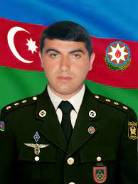

Məmmədov Cavad Səfiyar oğlu 25 may 1980-ci ildə Göyçə mahalında anadan olmuşdur. O, 1996-cı ildə Azərbaycan Dövlət Aqrar Universitetində, ikinci təhsilini isə Gəncə Dövlət Universitetində almışdır. Cavad 2000-2002-ci illərdə hərbi xidmətdə olmuşdur.

Əhmədzadə Famil Ağaəhməd oğlu 1975-ci ildə Bakı şəhəri Xətai rayonunda anadan olub. İbtidai təhsilə 1982-ci ildə Eldar Məmmədov adına İsmayıllı şəhər 3 nömrəli tam orta məktəbdə başlamışdır. Məktəbdə ən savadlı şagirdlərdən biri olmuşdur. Elə bunun nəticəsidir ki, o, orta məktəbi 1992-ci ildə əlaçı məzun kimi bitirmişdir. Elə həmin ildə Bakı Sosial İdarəetmə və Politologiya İnstitununa qəbul olmuşdur. O, akademiyanın sayılıb-seçilən tələbələrindən olub.

Gizir Qəfərov Saməddin Rasim oğlu 1993-cü il yanvarın 23-də İsmayıllı rayonunun Qubaxəlilli kəndində anadan olub. Uşaqlıdan arzusu həkimlik olan Saməddin məktəbi bitirəndən sonra Azərbaycan Tibb Universitetinin Hərbi Tibb Fakültəsinin "Hərbi feldşer işi" ixtisasına qəbul olub. Xidmət dövründə gizir feldşer olan Saməddin 2016-cı ilin aprel döyüşlərində 130 yaralını, 2020-ci il Tovuz döyüşlərində 50-dən çox, Vətən müharibəsində isə 90 yaralını döyüş meydanından çıxarımışdır. Sonuncu dəfə yaralı çıxaran zaman snayper gülləsinə tuş gələrək şəhid olmuşdur.